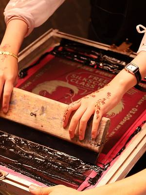
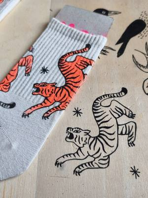
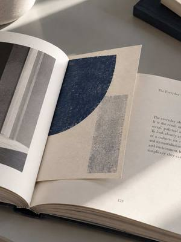
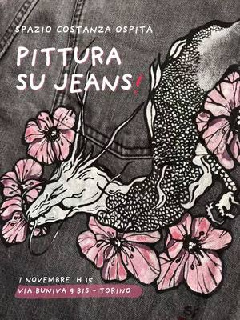
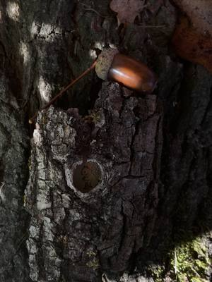
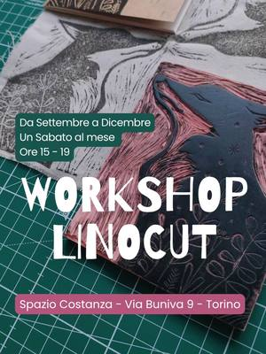
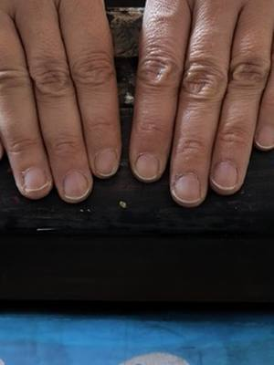
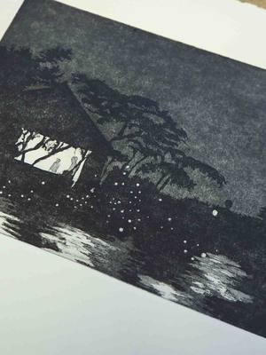
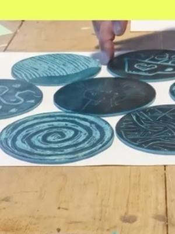
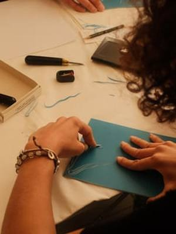

Printing workshops in Turin and around
Screen printing, cyanotype, etching, risograph and botanical printing workshops and courses in Turin and around.
Search all workshops13 activities coming up · updated on 25 November 2026

wed25novPrintingMani: screen printing workshopWednesday 25 November, 16:30–19:30Vanchiglietta (TO) · 10 €with Sarasoulsilver at Bocciofila Vanchiglietta- wed25novPrintingPrintmaking workshop: Tetra Pak printsWednesday 25 November, 18:30–20:30Asti (AT) · 45 €with Claudia Selz at Mysa

thu26novPrintingDesigner Socks: screen-printed socksThursday 26 November, 18:30–21:00Vanchiglia (TO) · 80 €with Babel at Nodo Tufting Torino- sat28novPrintingScreen printing with emulsion: the screen as canvasSaturday 28 November, 10:00–13:00Collegno (TO) · Freewith Chiara Ferraro at Leumann Hub

sat28novPrintingRisograph postcards: between the pagesSaturday 28 November, 10:30–12:30Borgo Po (TO) · 20 €with Print Club Torino
sat28novPrintingBlock printing: printing with wooden blocksSaturday 28 November, 15:30–17:30Vanchiglia (TO) · 35 €with Chalo Creative Studio at Spazio Costanza
sun29novPrintingPrintmaking workshop: etching on zincSunday 29 November, 14:00–18:00San Salvario (TO)with Olga & Felce
sat12decPrintingBicromia in compagnia: two-colour linocutSaturday 12 December, 15:00–19:00Vanchiglia (TO) · 50 €with Lilia Miceli at Spazio Costanza
sat12decPrintingPerpetual Calendar: screen printing and embroiderySaturday 12 December, 15:30Vanchiglia (TO) · 80 €with Babel e Chiara Allione at Nodo Tufting Torino
from29janPrintingPrintmaking masterclass: etching and morefrom Friday 29 January, 09:30–17:30Lingotto (TO) · 370 €with Giancarlo Busato at Print Club Torino
from2febFor familiesPrintmaking course: for teenagersfrom Tuesday 2 February to Tuesday 2 March, every Tuesday, 17:00–18:30Cuneo (CN) · 100 €with Michele Bruna at Sclab- from19febPrintingpassoA2 masterclass: drawing and animationfrom Friday 19 February to Sunday 21 February, 18:30Lingotto (TO) · 300 €with Margherita Premuroso at Print Club Torino

dateof your choicePrintingLinocut: make your own stampDate of your choiceSan Salvario (TO) · from 40 €with Mosca Bianca di Gaia Sandrelli